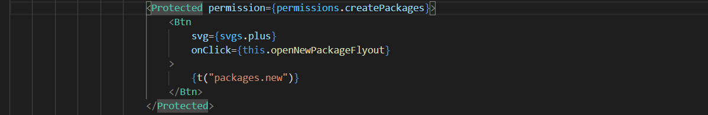
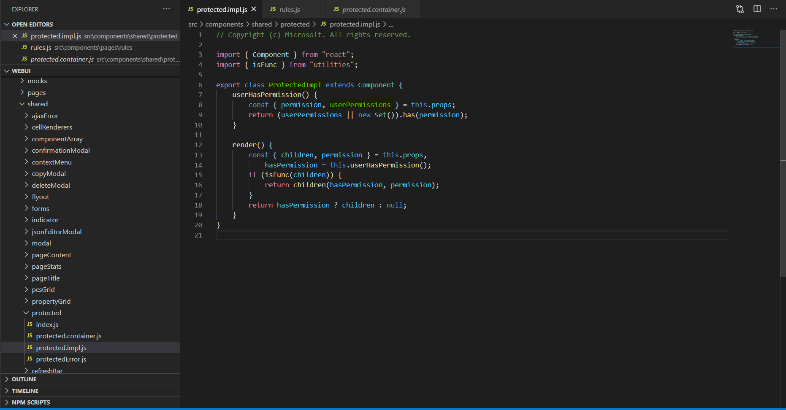
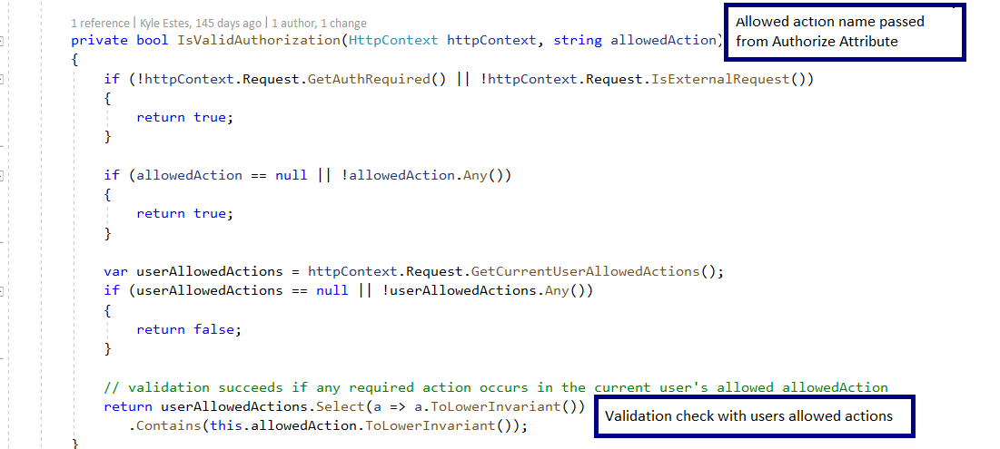
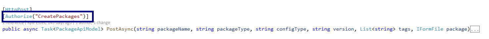

Permissions Architecture
This document has the technical details of permissions that are being handled in the Serenity platform.
- For each and every environment, we are storing the roles and its associated permissions in AppConfiguration. One needs to have access to this in order to see the list of available roles and permissions.
Web Layer
A generic Protected component is built and being re-used all over the application.
Here is the sample

Implementation Details
- As part of each deployment, we read the data from App Configuration and store them in a json file namely Policies.js.
- After deployment, when we load the application we read the data from policies.js and fetch the associated permissions based on the loggedIn user role.
- Then we store the data in the redux store and compare with the input permission through the Protected component.
- If the comparison is true then the associated component is loaded or else null.
Source: Above implementation code is present in Protected component(src\components\shared\protected\protected.impl.js)

API Layer
For all the API methods, we are adding authorize attribute by passing the respective permission. As part of this authorize filter attribute implementation we are validating the permission passed with the permissions associated with the loggedIn user role and respond based on the validation.
Below is the screenshot of the implementation

Sample
